速览
像这样大量飞出的特效，一般叫粒子（Particle），即「微粒」的意思，包括以前讲过的广告牌。从《星之卡比》起就有类似粒子的表现，那时出什么都很困难。机能每次提升，制约就减少，粒子处理也变轻了，但不会为零。能用超级多的粒子当然高兴，但不可能，所以设了各种限制。原则上：寿命要短——留在画面上久一点更好，但要一个接一个，用更快的速度来补偿短寿命。接下来，把多个粒子合成一个：看起来像从球里冒出很多水泡，其实是几块板上画了多个泡泡而已。错开时机：不是同时呼出很多粒子，而是错开时机，能压低实际显示数量。错开位置，尽量不重叠：重叠的粒子不算有效利用，太浪费。稍微做大一点：本来出一大堆小粒子最好，但做不到，所以把出的每一枚广告牌画得能尽量有效利用。《铁拳 7》等丰富的特效令人羡慕；《大乱斗》不仅机能，镜头拉远程度和命中标记的出现量也不同；但也努力再现了，节奏快的连续命中就做不到那样。只能在各个游戏可容许的范围内追求最大效果。顺便，初代《星之卡比》中打倒敌人的特效像粒子吧，有几种图案：其实是手工每帧摆放星星，连续送出来表现；没有移动程序也没有移动数据，只有座标数据；炸弹的爆炸也只由摆放图案构成。当时用在红白机上运行的工具，「啪嗒啪嗒」做了不少这样的东西：耗数据量，但动作轻是要点。吸入也算粒子：随机流放几种移动图案；混入白色与黑色点，让任何背景色都能承受。但当时把 8×16 的整块图用在 2×4 点的图上，觉得非常浪费——旧硬件是节约文化，所以养成了节省的习惯。
1. 什么是粒子 0:03
像这样大量飞出的特效，一般叫粒子，即「微粒」的意思，包括以前讲过的广告牌。
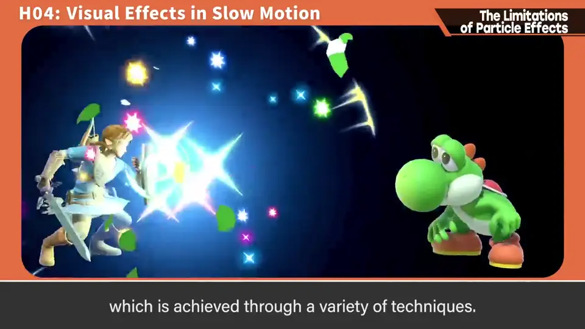
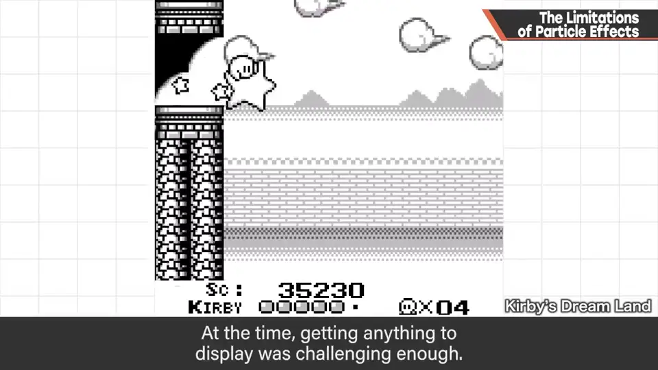
从《星之卡比》起就有类似粒子的表现，那时出什么都很困难。
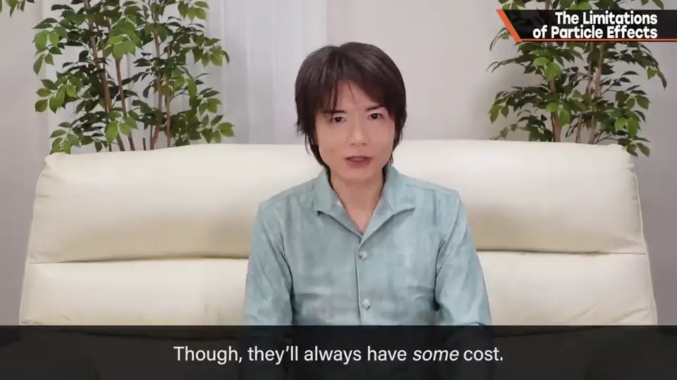
2. 节省粒子的原则 0:50
能用超级多的粒子当然高兴，但不可能，所以设了各种限制。
- 寿命要短：要一个接一个，用更快的速度来补偿短寿命。
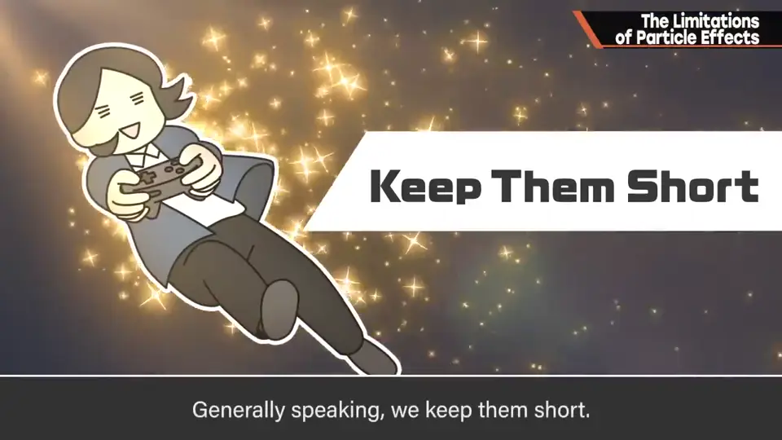
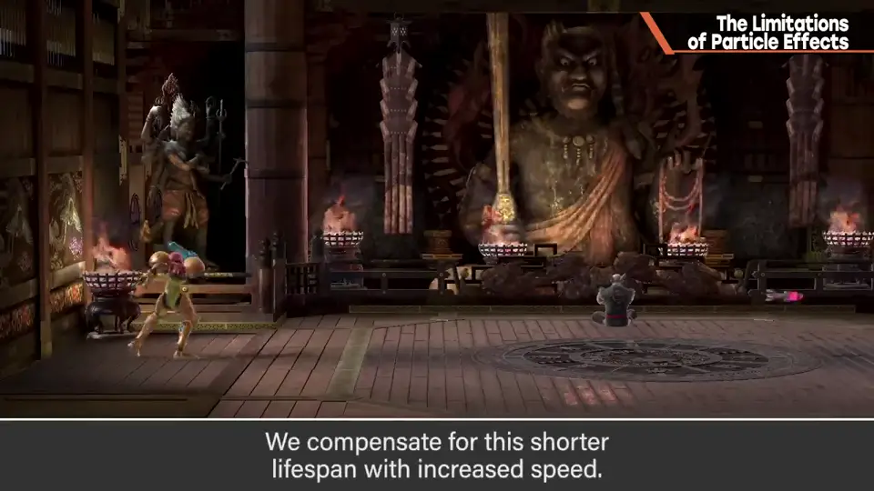
- 把多个粒子合成一个：看起来像从球里冒出很多水泡，其实是几块板上画了多个泡泡。
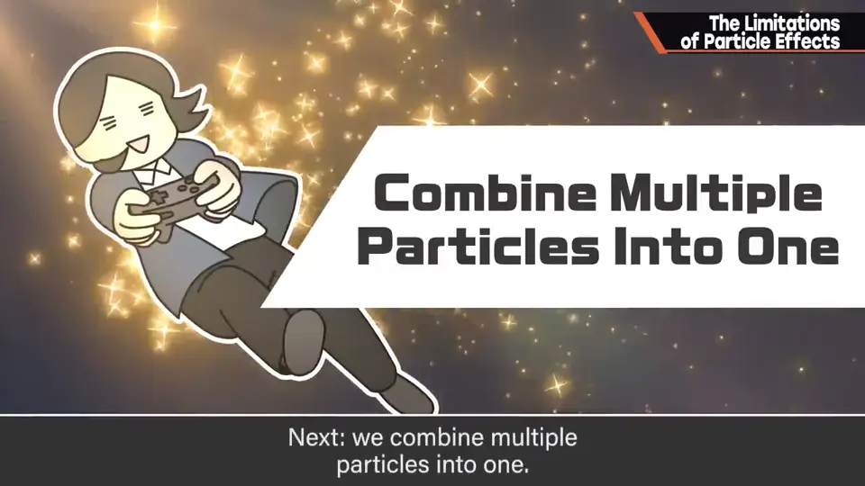
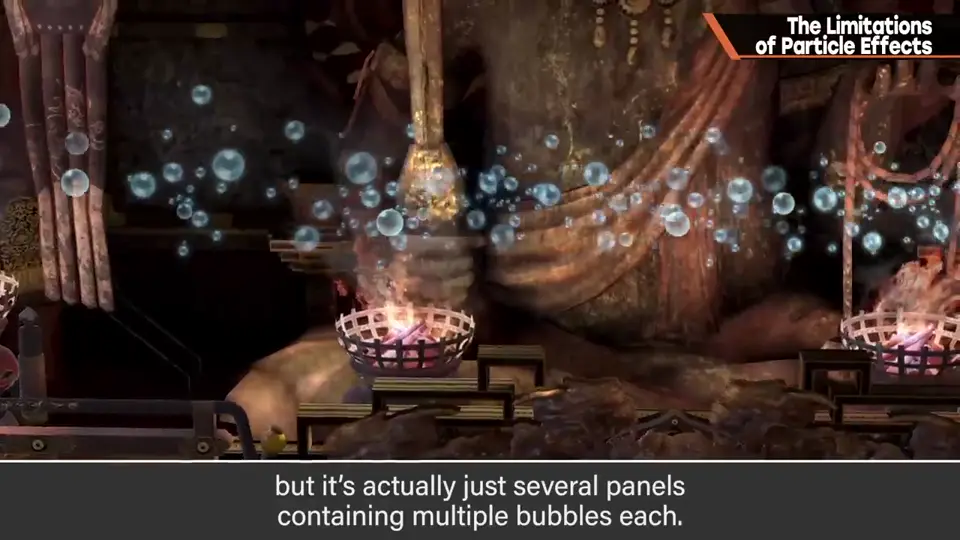
- 错开时机：不同时呼出很多，压低实际显示数量。
- 错开位置，尽量不重叠：重叠的粒子不算有效利用，太浪费。
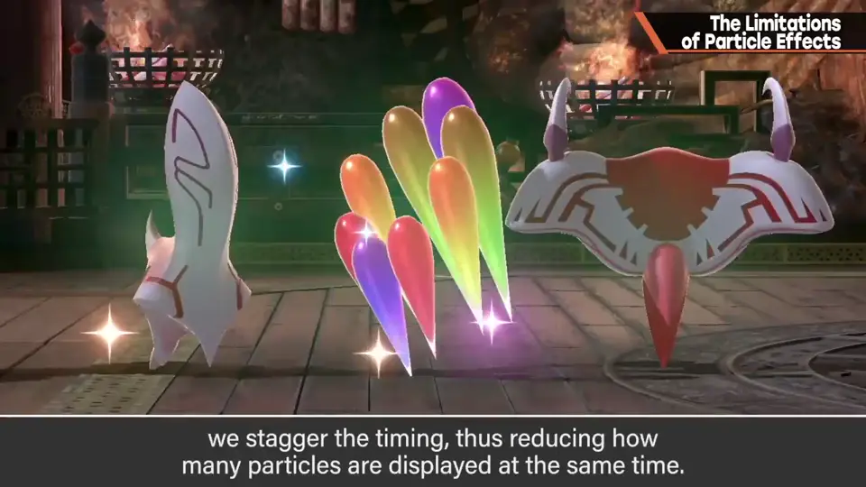
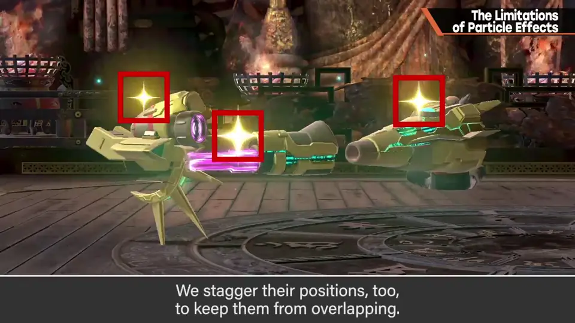
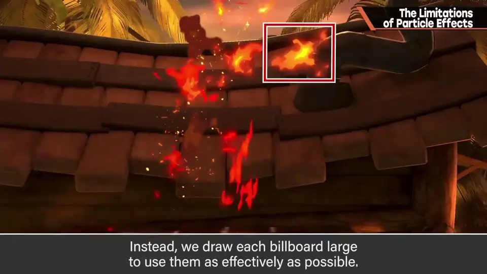
- 稍微做大一点：本该出一堆小粒子，但做不到，所以把每一枚广告牌画得尽量有效利用。
3. 各游戏的取舍 2:23
《铁拳 7》等丰富的特效令人羡慕。《大乱斗》不仅机能，镜头拉远程度和命中标记的出现量也不同。
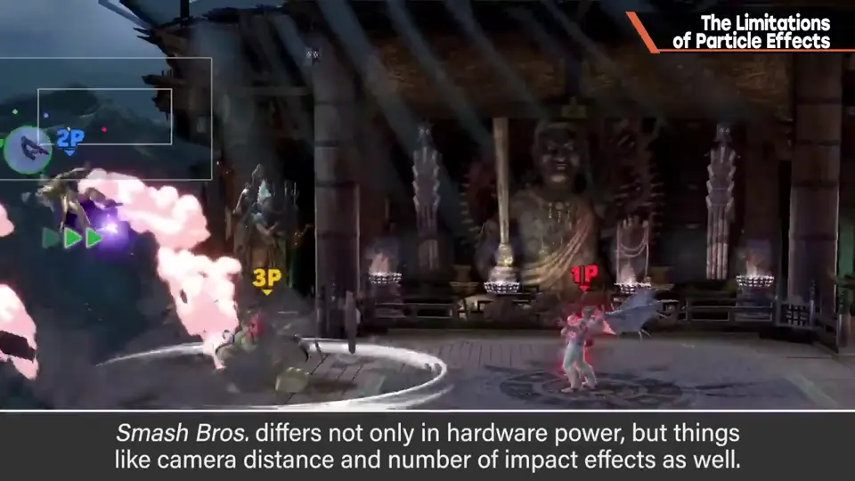
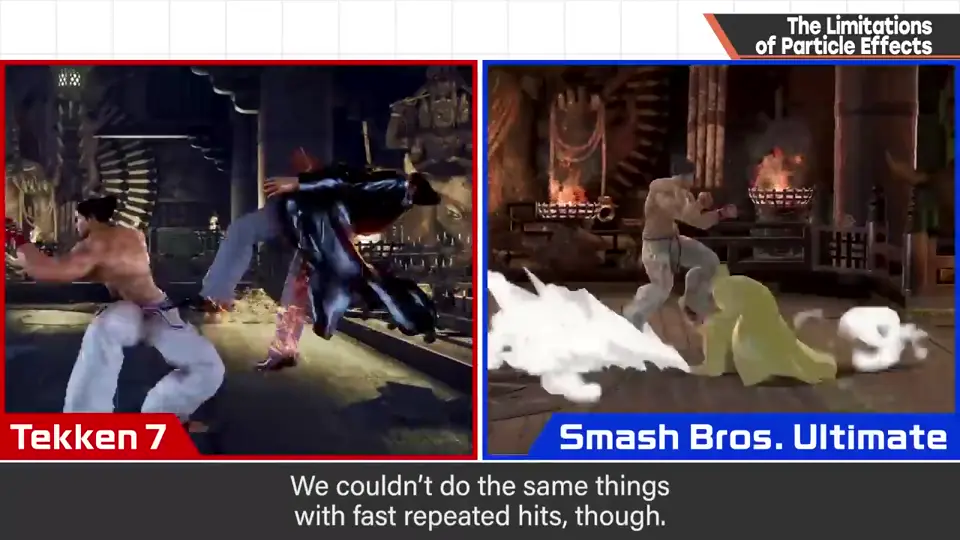
也努力再现了，但节奏快的连续命中就做不到那样。
4. 初代卡比的手工粒子 3:03
初代《星之卡比》中打倒敌人的特效像粒子吧，有几种图案。
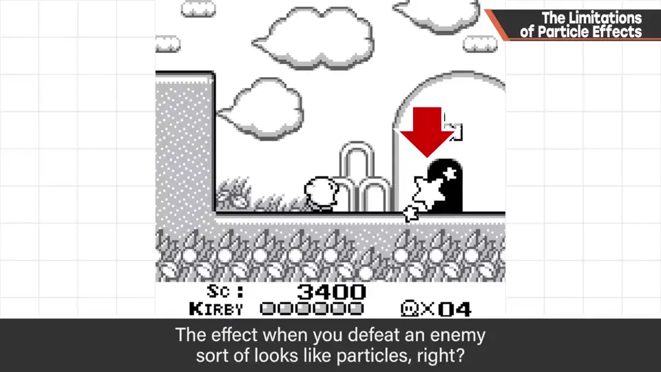
其实是手工每帧摆放星星，连续送出来表现：没有移动程序也没有移动数据，只有座标数据。炸弹的爆炸也只由摆放图案构成。
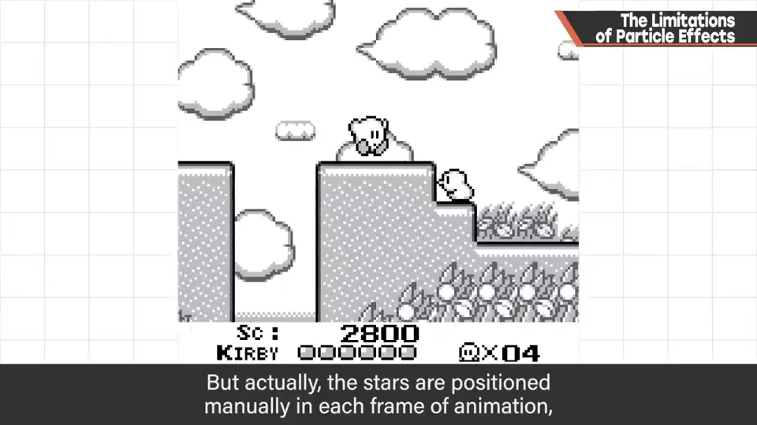
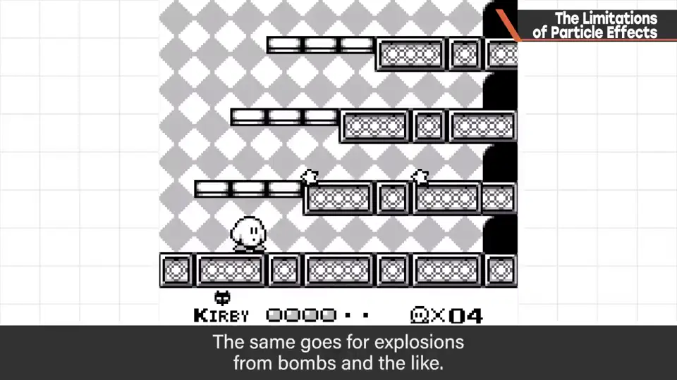
当时用在红白机上运行的工具做了不少这样的东西：耗数据量，但动作轻是要点。
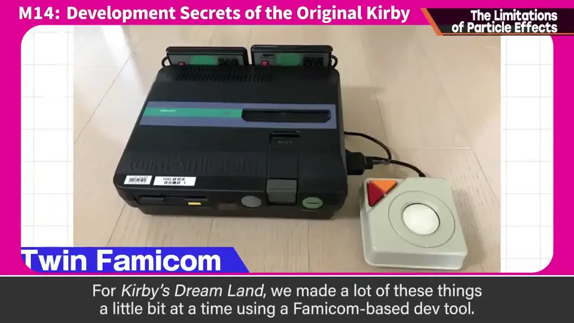
5. 吸入也是粒子 3:57
吸入也算粒子：随机流放几种移动图案。
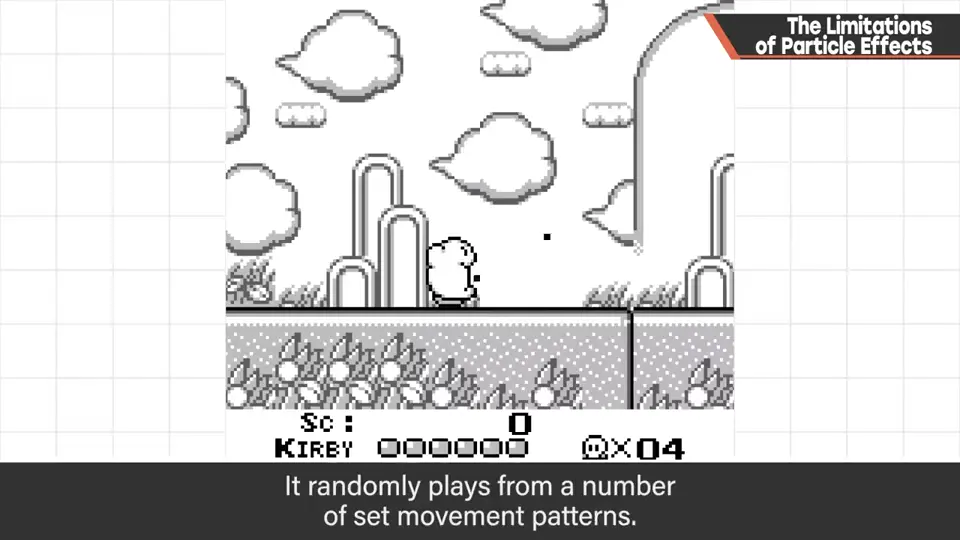
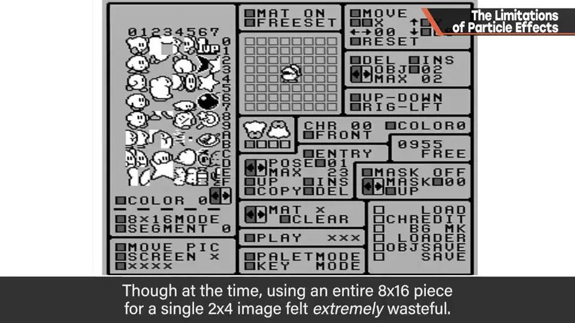
但当时把 8×16 的整块图用在 2×4 点的图上，觉得非常浪费——旧硬件是节约文化，所以养成了节省的习惯。
自测题
1. 节省粒子数量的方法有哪些？
寿命短（用速度补偿）、多个画在一枚板上、错开时机、错开位置、每枚画大一点。 1:30
2. 初代卡比的打倒敌人特效是怎么做的？
手工逐帧摆放星星，只有座标数据，没有移动程序。 3:25
3. 吸入粒子为什么混入黑白点？
让任何背景色上都看得见。 4:02